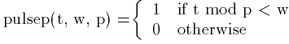

Tutorial 5: Defining Piecewise Functions and Changing Solver Options
In this tutorial, we learn how to define piecewise continuous functions and how to change solver options. In addition, we provide a brief description of the four solvers currently available for ODE Toolkit.
To enter a piecewise defined function into ODEToolkit, ODEToolkit uses the piecewise keyword, which takes an alernating sequence of conditions (i.e. boolean expressions) and values (i.e. numerical expressions), followed by an optional additional numerical expression. To evaluate a piecewise expression, ODE Toolkit finds the first boolean expression that evaluates to true and uses the numerical expression that follows it as the result. If none of the boolean expressions evaluate to true and an optional extra numerical expression was given, ODE Toolkit evaluates this expression as the result. Otherwise, it gives zero as the result. Note that this is the same syntax used by Maple.
Let's explore the following system of ODE's:
x' = -5.6*x + 48*pulsep(t, 1/48, 1/2)
y' = 5.6*x - 0.7*y
where the function pulsep is defined by

The function pulsep would be entered as:
pulsep(t, w, p) = piecewise(t % p < w, 1)
Note the use of the percent size as the modulus operator. A complete list of operators supported in ODE Toolkit can be found here. You might also notice that pulsep is also just a square wave, so we could have used the sqw function instead of piecewise. A complete list of built-in functions can be found here.
E. Spitznagel presented this system to a Workshop on Teaching ODE's with Computer Experiments at Harvey Mudd College in 1992. The system models the transport of a drug in the body, where x' is the rate of diffusion of the drug into the bloodstream and y is the concentration of the drug in the bloodstream. Time, t is measured in days. The patient recieves a dose of the medication every 12 hours, and the dose is released uniformly over a 30 minute span of time, modeled by the function pulsep(t, w, p). The argument p indicates the period of the pulse, which is of unit height for the first w days of the pulse and "off" ( = zero) for the rest of the time.
To enter this system into ODE Toolkit, we would type the following into the text-input box and click Enter ODE when we are done:
x' = -5.6*x + 48*pulsep(t, 1/48, 1/2)
y' = 5.6*x - 0.7*y
pulsep(t, w, p) = piecewise(t % p < w, 1)
Now make sure that all of the initial conditions are set to zero and change the Solve Span to 6 (if you are unsure how to do this, see Tutorial 1). Note that the RK 4/5 solver is the default solver. Now click the Solve Forward button and click on the y-t tab. ODEToolkit now shows the following display.
Now let's try changing the maximum stepsize and computing a new solution curve. Enter 0.00005 into the Max. Step Size textbox in the Solver Options menu under the Runge-Kutta Solver. Recall that you can get to this menu by clicking on the Solver Options button in the bottom left hand corner of ODEToolkit. Now click Solve Forward. Notice how the new solution curve looks dramatically different from the old one, even though they should represent the solution to the same initial value problem. This is illustrated in the following screenshot:
Here we see a drawback of variable stepsize solvers like RKF45. When dealing with driving terms that have sudden, short periods of rapid change (like in this example, due to the square wave pulsep function), we must be careful not to set the maximum stepsize too high. When computing the first portion of the solution curve, the solver was able to achieve the desired accuracy using the maximum stepsize, so it was happily computing along when suddenly pulsep changed, dramatically changing x'. The length of time that pulsep was on during each period was 1/48 ( approximately 0.0208), but the maximum stepsize was 0.05, so the solver completely missed some of the jumps in pulsep. When we changed the maximum stepsize to 0.00005, a significantly smaller time interval than the jumps in pulsep, we obtained a much more accurate solution curve.
{kind=link}
{kind=link}